Publicaciones CEDILIJ
Desde 1987 desarrollamos labores editoriales eventuales vinculadas a nuestras investigaciones: la revista especializada Piedra Libre (1987-1998) y otras publicaciones institucionales sobre proyectos y capacitaciones. Además, quienes integran nuestro equipo han escrito y publicado diversos ensayos y artículos académicos.
Revista Piedra Libre
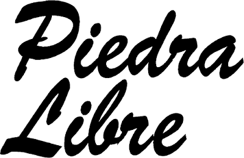
Entre mayo de 1987 y septiembre de 1998 editamos 20 números de la revista Piedra Libre, una de las pocas publicaciones especializadas en literatura infantil y juvenil que existían en Latinoamérica durante esa década. Estuvo dirigida inicialmente por Perla Suez y María Teresa Andruetto, y luego por Susana Allori y Mariano Medina.
Cada número abordaba una temática específica y ofrecía reportajes a escritores, comentarios bibliográficos, experiencias pedagógicas e información nacional e internacional. De esta labor editorial se ramificaron el suplemento Gente Necesaria, la serie de libros Piedra Libre al Debate y los Cuadernos de Piedra Libre, editados por Libros del Quirquincho.
Entre quienes colaboraron con la revista figuran especialistas y escritores destacades de Argentina, además de referentes de Alemania, Brasil, Colombia, Cuba, Chile, España, Francia, México, Uruguay y Venezuela. Muchos de sus artículos se siguen consultando como material de formación de docentes y mediadores.
Los 20 números
Hacé clic en una tapa para ver y descargar el número completo.
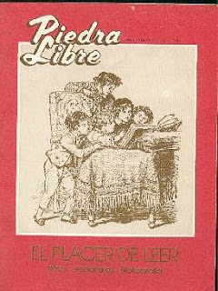
N.º 1 (se abre en una pestaña nueva) El placer de leer 1987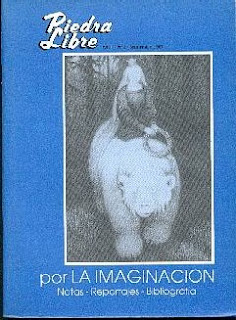
N.º 2 (se abre en una pestaña nueva) Por la imaginación 1987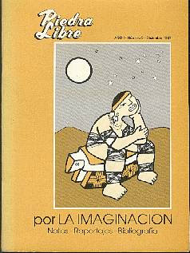
N.º 3 (se abre en una pestaña nueva) Por la imaginación (II) 1987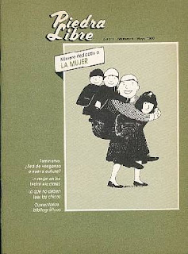
N.º 4 (se abre en una pestaña nueva) La mujer 1988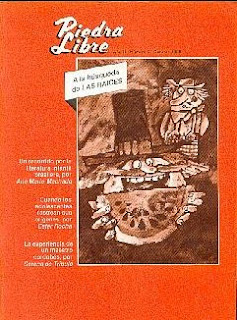
N.º 5 (se abre en una pestaña nueva) A la búsqueda de las raíces 1988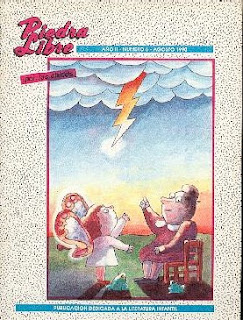
N.º 6 (se abre en una pestaña nueva) Por los chicos 1990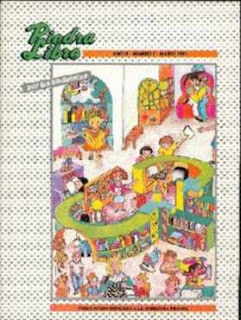
N.º 7 (se abre en una pestaña nueva) Por las bibliotecas 1991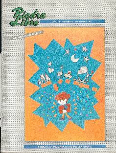
N.º 8 (se abre en una pestaña nueva) Animación a la lectura 1991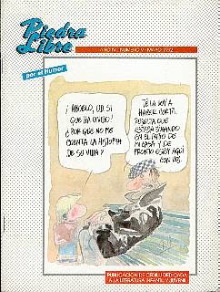
N.º 9 (se abre en una pestaña nueva) Por el humor 1992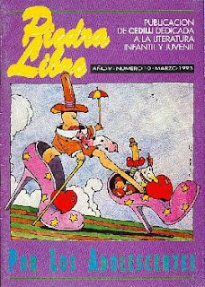
N.º 10 (se abre en una pestaña nueva) Por los adolescentes 1993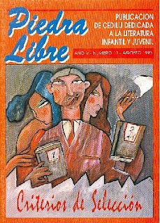
N.º 11 (se abre en una pestaña nueva) Criterios de selección 1993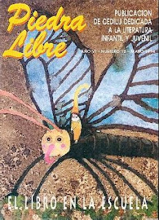
N.º 12 (se abre en una pestaña nueva) El libro en la escuela 1994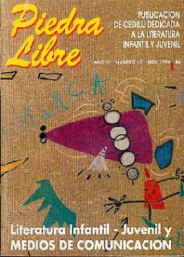
N.º 13 (se abre en una pestaña nueva) Medios de comunicación 1994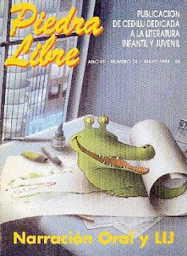
N.º 14 (se abre en una pestaña nueva) Narración oral y LIJ 1995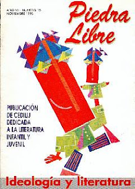
N.º 15 (se abre en una pestaña nueva) Ideología y literatura 1995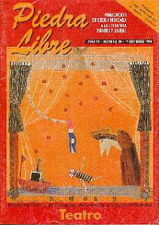
N.º 16 (se abre en una pestaña nueva) Teatro 1996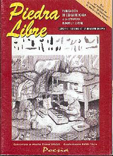
N.º 17 (se abre en una pestaña nueva) Poesía 1996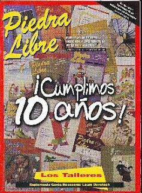
N.º 18 (se abre en una pestaña nueva) Los talleres 1997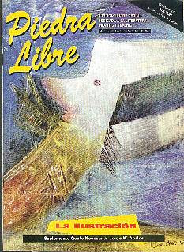
N.º 19 (se abre en una pestaña nueva) La ilustración 1997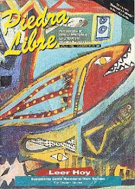
N.º 20 (se abre en una pestaña nueva) Leer hoy 1998Colecciones derivadas
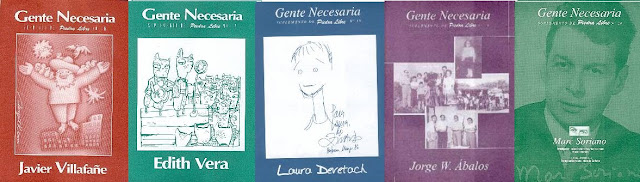
Gente Necesaria
Separatas de la revista Piedra Libre que editamos entre 1996 y 1998: un proyecto de investigación con el que buscábamos revalorizar y difundir la obra y la vida de personalidades especiales del campo de la literatura infantil y juvenil. Editamos cinco números.
-
Javier Villafañe Selección de textos y comentarios: Equipo de Evaluación y Selección de LIJ de CEDILIJ. Separata de Piedra Libre n.º 16, 1996.
-
Edith Vera Selección de textos y comentarios: Mariano Medina y Susana Allori. Ilustraciones: Jorge Cuello. Separata de Piedra Libre n.º 17, 1996.
-
Laura Devetach Selección de textos, reportaje y comentarios: Lilia Lardone. Testimonios de Lucía Robledo y Silvina Reinaudi. Ilustración especial de Ziraldo (Brasil). Separata de Piedra Libre n.º 18, 1997.
-
Jorge W. Ábalos Selección de textos y comentarios: Mariano Medina. Imágenes especiales: artesanías de José Ignacio Marcos. Separata de Piedra Libre n.º 19, 1997.
-
Marc Soriano Investigación, selección de textos y traducciones de Graciela Montes. Separata de Piedra Libre n.º 20, 1998.
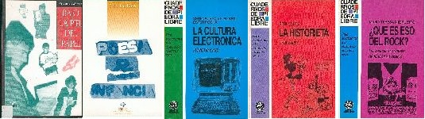
Piedra Libre al Debate y Cuadernos de Piedra Libre
-
Poesía & Infancia — Lilia Lardone Distinguida con el Fondo Estímulo a la Actividad Editorial Cordobesa 1996 y el Premio Pregonero a Comunicaciones teóricas 1998. Colección Piedra Libre al Debate, 1996.
-
Bajo la piel del papel. Aportes para la animación a la lectura en los adolescentes — Susana Gómez Distinguida con el Fondo Estímulo a la Actividad Editorial Cordobesa 1996. Colección Piedra Libre al Debate, 1996.
-
La cultura electrónica ¿quién le teme? — Serena Jara Melagrani y Ester Rocha Ed. Libros del Quirquincho, Bs. As., 1993.
-
¿Qué es eso del rock? Una poesía al alcance de todos los bolsillos — María Teresa Andruetto Ed. Libros del Quirquincho, Bs. As., 1993.
-
La historieta: ¿para qué? — Perla Suez Ed. Libros del Quirquincho, Bs. As., 1993.